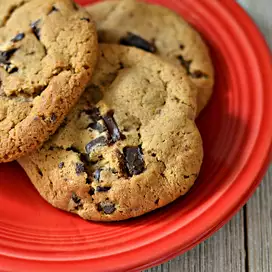

Cookies Recipe

Chocolate Chip Cookie
Everybody wants this recipe for chocolate chip cookies when I bring them anywhere to share.
They are even award-winning. My daughter, Tegan, made them for a cookie baking contest and won a red ribbon!
You can use any flavor pudding you like for this recipe.
Ingredients
- All Purpose Flower
- Baking Soda
- Butter
- Brown Sugar
- White Sugar
- Instant Vanilla Pudding Mix
- Eggs
- Vanilla Extract
- Chocolate Chips
Steps
- Preheat the oven to 350 degrees F (175 degrees C).
- Sift together flour and baking soda in a medium bowl, set aside.
- Cream together butter, brown sugar, and white sugar in a large bowl.
Beat in instant pudding mix until blended. Stir in eggs and vanilla.
- Add flour mixture to the butter mixture until it's well incorporated.
Fold in chocolate chips and nuts.
- Drop cookies by rounded spoonfuls onto ungreased cookie sheets.
- Bake in batches in the preheated oven until the edges are golden brown, 10 to 12 minutes, switching racks halfway through.